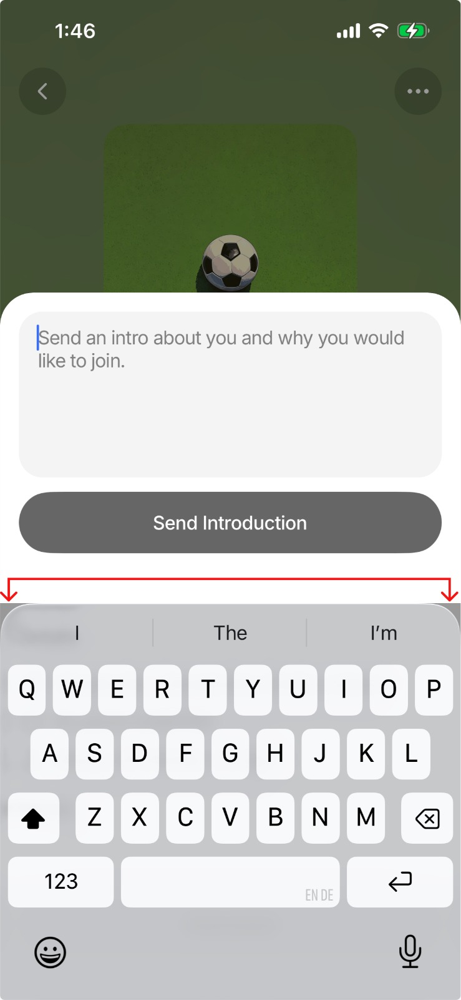
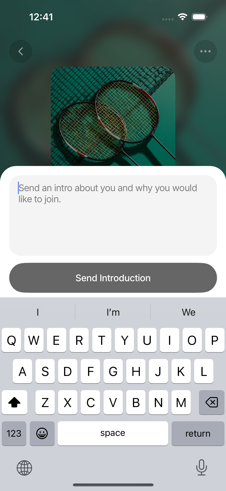

iOS bottom sheet now meets the keyboard edge
The introduction-message modal previously exposed its resting safe-area inset as a white strip above the iOS keyboard. The shared bottom-sheet geometry has been corrected and verified on an iPhone 15 Pro simulator.
Before and after


Root cause
The sheet had a resting bottom inset of BASE_PADDING_BOTTOM + safeBottom. On
this simulator that is approximately 8 + 34 = 42 points. Keyboard avoidance
translated the outer sheet by the complete keyboard height, so those 42 points became
visible above the keyboard.
The previous attempted fix animated padding on the inner content view. The visible keyboard boundary, however, is controlled by the transformed outer sheet, making that approach dependent on an additional layout pass.
Implemented geometry
The resting inset remains stable. On iOS, only the 34-point home-indicator safe-area inset is subtracted from the keyboard translation. It sits behind the keyboard, while the 8-point base padding remains visible as intentional internal spacing. Android keeps its existing translation behavior.
iOS translation = max(0, keyboard height - safe-area bottom inset)
Android translation = keyboard heightValidation
- Reproduced the real Interested → Send Introduction → focus text input flow with Mobile MCP.
- Captured the fixed state on an iPhone 15 Pro simulator running iOS 17.4.
- Targeted Jest suite: 5 tests passed, including iOS, minimum-zero, and unchanged Android geometry.
-
Strict TypeScript validation: passed with
npm run typecheck. - Temporary test database and simulator-location changes were restored after verification.